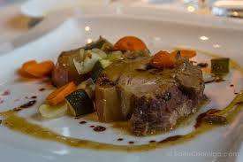
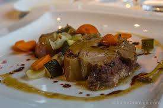
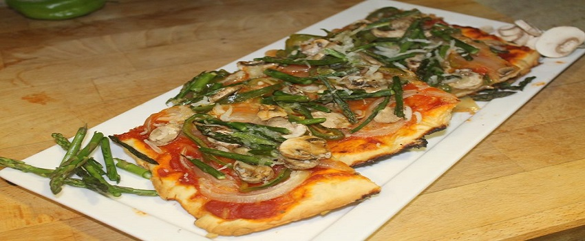

Pizza de Espárragos
3/7/2017

La masa: Mezclamos la sal con la harina, y por otra parte, disolvemos la levadura en el agua templada con las dos cucharadas de aceite de oliva virgen. Mezclar hasta formar una masa consistente y elástica que no se pegue. Amasamos de nuevo la bola y la vamos extendiendo poco a poco dándole forma de disco grande, de aproximadamente un centímetro de grosor. Extendemos una fina capa de tomate triturado sobre la masa de pizza. Ahora añadimos el queso mozzarella, los champiñones lavados y laminados, los espárragos previamente cocidos, el jamón cortado en dados y los tomatitos cortados por la mitad. Ya sólo queda introducir la pizza en el horno precalentado a 200ºC hasta que ésta quede bien dorada.

User123: Excelente receta!
Comentario1
User124: Queda más rica con más espárragos y hay que recordar cortarle las partes duras del tallo
Comentario2
Solomillo con ajo, panceta y ciruela
3/11/2017

Tajear el solomillo e incrustar ajo, ciruelas y panceta fileteados. Dorar en oliva con romero y salpimentar. Sumar la cebolla picada y cuando transparenta desglasar con cerveza. Agregar la miel cuando evapora el alcohol e integrar. Aparte, cubrir una basa de sartén con queso de rallar hasta que derrita, dar vuelta y dorar. Romper y utilizar como galletas. Para el puré, hervir las batatas y pisar con la crema de leche, el licor de naranja y mezclar con almendras previamente tostadas. Salpimentar.
UserA25R: Deliciosa combinación
Comentario2
UserZX90: No tiene desperdicio
Comentario2